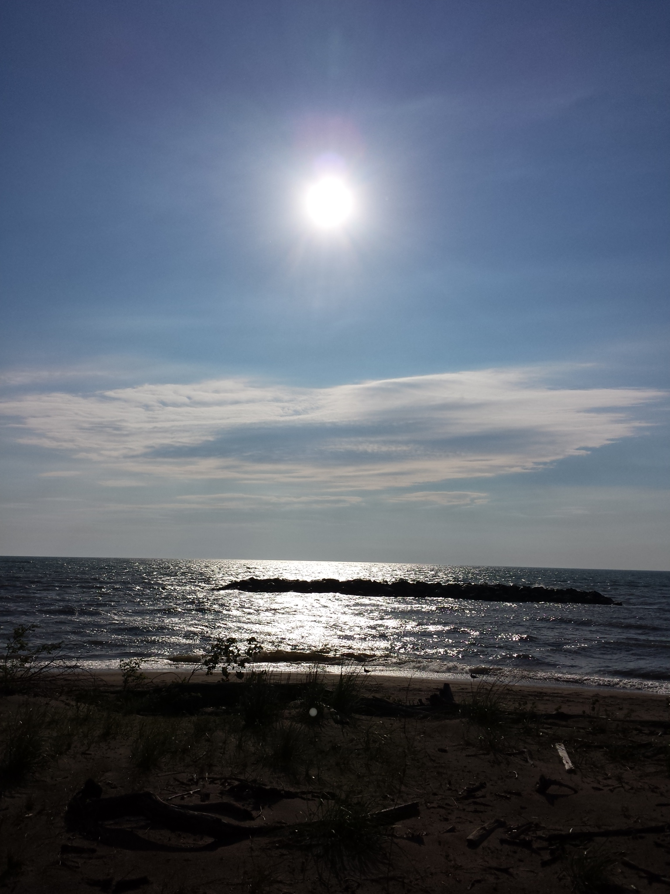

Hometown Sunset
This picture is from the drive home from my friend's house in Plainsboro, NJ. I took this picture from the side of the road overlooking a large field.
Fort Tryon Park
This is a picture on a snowy morning in Fort Tryon Park in just above Washington Heights in Manhattan. My brother was living in the area, and suggested I check out it the morning, and I ended up getting some cool pictures out of it.

Lake Erie Beach
I had a really long summer while working for GE Transportation in Erie, Pennsylvania, but there were some pretty great views on the beach of Lake Erie.